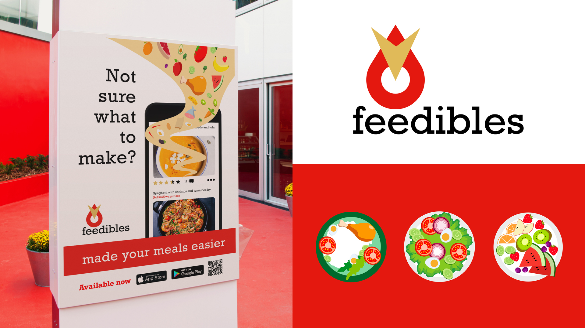

biography
Hello! My name is Co Vu and I will soon graduate with a Bachelor of Design majoring in Communication Design. I have been interested in design since high school and The University of Waikato was the perfect place to hone my skills.
Before coming to Waikato, I had always thought that design is about making eye-catching logos and posters. After joining the university, however, I have come to realize that design is much more than just that. Design can communicate, motivate and increase awareness with the audience. During the past three years I have gained the knowledge and essential skills necessary for my major. My main areas of interest are branding and print design, with some secondary skills in UI/UX design.
project description
Many freshmen coming to university are often young adults who have just recently begun their independent
life. Some might take up cooking as a means to save budget. You might be thinking, with certainty, that
university cannot be that hard.
Then suddenly, your lack of or inadequate time management backfires on you. Now, you have three projects
near deadlines and your table is full of empty energy drink cans that helped make it through the days.
You also find that your plan to cook has become impossible.
You find yourself with no time to cook normal meals or even to go grocery shopping. At this point, you
just decide to buy take-outs, like hamburgers and pizza, or have instant noodles for the rest of the
trimester. They are cheap and good. However, it has been scientifically proven that healthy meals and a
regular eating pattern are linked to academic achievement. Basically, if you are living on take-outs for
more than a week, it might affect your studies and grades. This unbalanced diet will affect your health
as well, in the long run.
My project "Feedibles" is an organisation that supports and encourages young university students to make
their own meals and eat healthier. I have used the common communication service that can further support
my campaign, which is a mobile app. The app will assist the users in finding more affordable groceries
and recommend recipes that are healthy and easy to make in a short time.
In addition, my project will include a series of posters and a postcard that advertise the functions of
the app, so it can reach more young students.
Feedibles

For more information contact us
Email: degreeshow@waikato.ac.nz
Faculty phone: 0800 924 528
Faculty information: cs.waikato.ac.nz